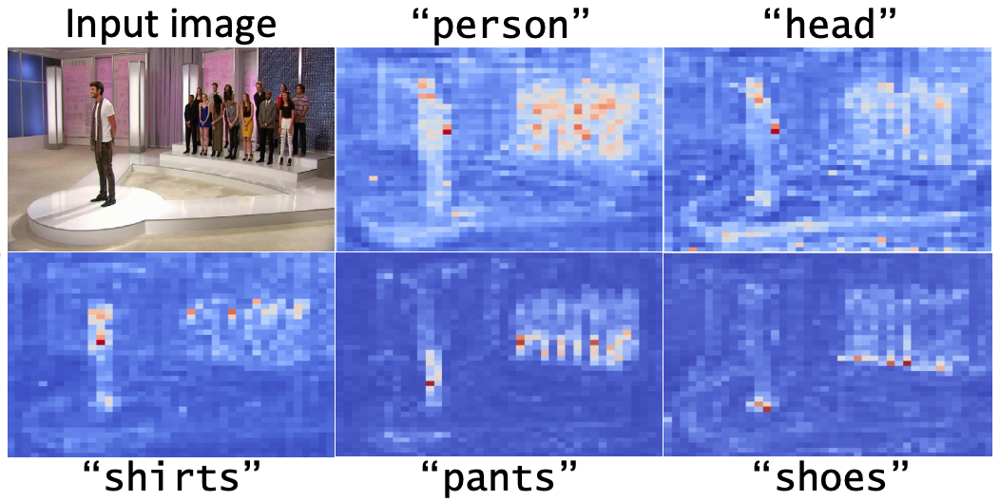
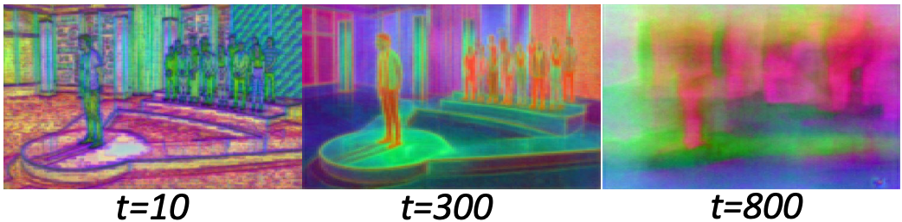
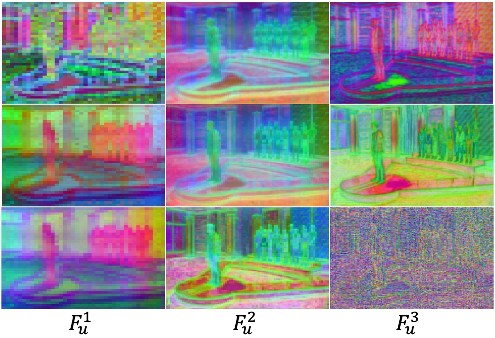
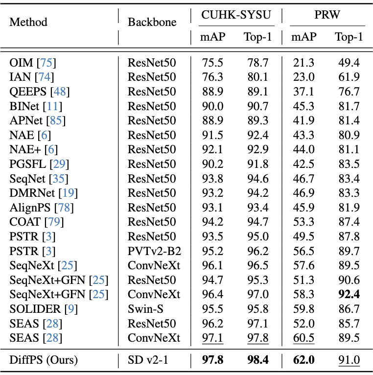

DiffPS:
Leveraging Prior Knowledge of Diffusion Model for Person Search
Giyeol Kim1*,
Sooyoung Yang2*,
Jihyong Oh1,
Myungjoo Kang2,3,
Chanho Eom1†
1GSAIM, Chung-Ang University,
2IPAI, Seoul National University,
3Department of Mathematical Sciences and RIMS, Seoul National University
*Equal contribution
🏆 ICCV 2025 Highlight Paper 🎉
🚀 Research Motivation
Most existing person search models rely on ImageNet pre-trained backbones. While these backbones provide decent fine-grained features, they often lack the rich visual priors required for person search in diverse and complex scenes.
Furthermore, conventional approaches rely on a shared backbone feature for both person detection and person re-identification tasks, leading to conflicting optimization objectives and degraded performance.
Our key motivation is to address these limitations by leveraging a pre-trained diffusion model, which offers richer visual semantics and enables task-specific decoupling to avoid feature interference.
Method
Prior Knowledge in Diffusion Model
DiffPS uses a frozen diffusion model backbone (Stable Diffusion) to provide rich spatial features, and separates task-specific features for detection and Re-ID to avoid gradient interference. This decoupled design ensures stability and better representation learning.
To fully exploit the capabilities of the pre-trained diffusion model, DiffPS leverages four inherent priors embedded in the model architecture:
-
1) Text Conditioning 🔽
Pre-trained diffusion models exhibit strong cross-modal alignment between text and image features, enabling precise localization of person-related regions (e.g., body parts, clothing). This alignment enhances the model’s ability to suppress background clutter and overcome occlusion, providing more robust feature representations for person search.
This motivates us to design DGRPN and SFAN, which explicitly exploit this alignment for detection and identification tasks, respectively.

-
2) Timestep Semantics 🔽
The informativeness of diffusion features varies with timestep. For complex scenes like person search, earlier to mid-stage steps (e.g., t=300) offer the best balance between denoising and detail preservation. These steps retain fine-grained features while minimizing the impact of both synthetic and real-world noise, leading to improved person-specific representation.

-
3) Hierarchical Structure 🔽
Diffusion models follow a UNet-based hierarchical structure, where up-stage layers merge global context and local details through skip connections. While up-stage features are generally effective for both detection and re-ID, their usefulness varies across layers. Carefully selecting specific up-stage outputs leads to stronger spatial precision and identity discrimination.

-
4) Shape Bias 🔽
As noted in “Intriguing properties of generative classifiers”, generative models often exhibit a shape bias, emphasizing global structures over fine details.
For person search, where both global structure and fine-grained details are essential, leveraging diffusion features while further enhancing high-frequency information can lead to even greater discriminative power
This motivates us to design MSFRN, which explicitly counteracts the shape bias by reinforcing fine-grained representations.
DiffPS Framework
DiffPS features a frozen diffusion backbone with decoupled detection (DGRPN) and re-ID (MSFRN, SFAN) branches, each tailored to leverage distinct diffusion priors for robust person search.
🔍 Branch-wise Module Design
DiffPS decouples the person search task into two branches: detection and re-identification (Re-ID), and designs dedicated modules to fully exploit the strengths of the diffusion backbone.
🔍 MSFRN (Re-ID)
Addressing the shape bias of generative backbones, MSFRN strengthens fine-grained details and high-frequency cues essential for robust person re-identification.
🧠 SFAN (Re-ID)
SFAN leverages cross-modal alignment from the diffusion model to boost identity discrimination, refining re-ID representations with text-aware semantics.
📍 DGRPN (Detection)
A novel region proposal network tailored to diffusion features, DGRPN harnesses text-conditioned priors to enhance localization accuracy and suppress background clutter in detection.
Quantitative Results

🎉 Curious to dive deeper? Check out our full paper above for all the exciting details! 📄
BibTeX
@inproceedings{kim2025diffps,
title={Leveraging Prior Knowledge of Diffusion Model for Person Search},
author={Kim, Giyeol and Yang, Sooyoung and Oh, Jihyong and Kang, Myungjoo and Eom, Chanho},
booktitle={Proceedings of the IEEE/CVF International Conference on Computer Vision (ICCV)},
year={2025}
}